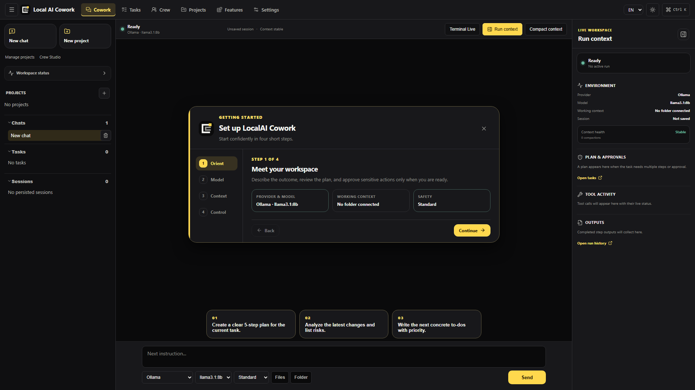

Outcome first
Work from a visible plan, not a disappearing prompt.
Describe what done looks like. Keep steps, task state, tool activity, and the result connected.
V2 preview // Windows + Linux // Apache-2.0
Plan the outcome, bring your own model, connect the tools you need, and keep important actions visible. A local-first alternative for people who want more control than a closed AI workspace can offer.
V2 2.0.0-alpha.8 is being prepared. The preview is not published yet. Existing downloads contain V1 v0.3.1. Read the scope and limits.

01 // The workspace
LocalAI Cowork keeps the objective, context, execution, and review surface together—so the work remains understandable while it moves.
Outcome first
Describe what done looks like. Keep steps, task state, tool activity, and the result connected.
Model choice
Run locally with Ollama or configure a compatible hosted endpoint when a task needs it.
Selected context
Choose the folders, documents, and project instructions that belong to the current objective.
Real tools
Use MCP servers, local tools, terminal workflows, skills, and reusable pipelines without hiding what is happening.
02 // The working loop
A simple loop turns a request into controlled work and a result you can inspect before it leaves your desk.
Define the result, project, model, and relevant context.
Follow the plan, tool calls, progress, and generated artifacts.
Keep sensitive actions behind explicit rules and approval points.
Turn repeatable instructions into skills, templates, and pipelines.
03 // Preview boundaries
V2 brings desktop and web interfaces onto a shared Rust core. The actual published package will define the accepted scope.
Choose a local sidecar or compatible V2 server, configure the model and confirm the working copy used for execution.
Typed inputs, conditions and human review forms. The complete invoice chain and event waiting remain in development.
Guided source selection, OCR and extraction proposals. Choose optional engines deliberately and review their output.
Managed runtimes, remote results, enterprise and Android each need additional integration and acceptance.
Signing, the update channel and installation must be verified against the exact package. No automatic V1-to-V2 upgrade is promised.
04 // Local by design
The desktop app runs on your device. You choose whether a task uses a local model or a configured remote service, and which files and tools it can reach.
Read the privacy boundaries05 // Know the trade-offs
Claude Cowork, Microsoft Copilot Cowork, and LocalAI Cowork serve different ecosystems. Compare the practical differences without pretending the products are identical.
Compare source access, local models, execution, subscriptions, and cost.
GUIDE / 02Compare a local desktop workspace with Microsoft 365 automation.
GUIDE / 03See what inspectable source changes for control and extensibility.
GUIDE / 04Evaluate LocalAI Cowork against the broader open cowork software category.
Built in public
Read the V2 preview scope, keep your V1 installation and help shape the next version with focused feedback.
06 // Before you install
LocalAI Cowork is early-stage software. These are the boundaries worth knowing before you use it for real work.
LocalAI Cowork is an open-source Windows and Linux desktop workspace for AI-assisted work. It combines chat, tasks, file context, model configuration, MCP servers, tools, approvals, and audit information in one application.
No. OpenCowork and Open Cowork are names used by other independent projects. LocalAI Cowork is separate; this OpenCowork alternative guide explains how to compare open cowork tools without mixing up product names.
No. LocalAI Cowork is an independent project and currently uses Ollama for local model execution. It is not affiliated with or endorsed by the separate LocalAI project at localai.io, Anthropic, or Microsoft.
Yes. Ollama is supported for local model execution. You can also configure OpenAI-compatible or OpenRouter endpoints when a hosted model fits the task better.
The selected connection determines where state is stored. A hosted model, a self-hosted V2 server or a network-enabled tool receives the information needed for the chosen action. Review that connection and its permissions before starting.
Yes. The application is available under the Apache License 2.0. A remote model provider may charge for its own API usage; local Ollama use does not require a provider subscription.
V2 targets Windows x64 NSIS and Linux x86_64 DEB/AppImage packages. Linux requires glibc 2.39 or newer, GTK 3 and WebKitGTK 4.1. RPM, ARM64, macOS, musl-only Linux and Android are outside this desktop preview. See the Linux installation guide.